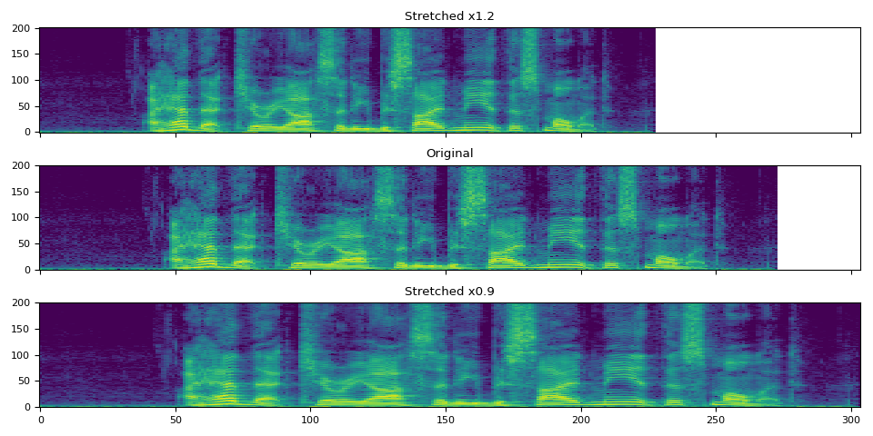

Note
Click here to download the full example code
Audio Feature Augmentation¶
Author: Moto Hira
# When running this tutorial in Google Colab, install the required packages
# with the following.
# !pip install torchaudio librosa
import torch
import torchaudio
import torchaudio.transforms as T
print(torch.__version__)
print(torchaudio.__version__)
2.0.0.dev20221221
2.0.0.dev20221221
Preparing data and utility functions (skip this section)¶
# @title Prepare data and utility functions. {display-mode: "form"}
# @markdown
# @markdown You do not need to look into this cell.
# @markdown Just execute once and you are good to go.
# @markdown
# @markdown In this tutorial, we will use a speech data from [VOiCES dataset](https://iqtlabs.github.io/voices/),
# @markdown which is licensed under Creative Commos BY 4.0.
# -------------------------------------------------------------------------------
# Preparation of data and helper functions.
# -------------------------------------------------------------------------------
import librosa
import matplotlib.pyplot as plt
from torchaudio.utils import download_asset
SAMPLE_WAV_SPEECH_PATH = download_asset("tutorial-assets/Lab41-SRI-VOiCES-src-sp0307-ch127535-sg0042.wav")
def _get_sample(path, resample=None):
effects = [["remix", "1"]]
if resample:
effects.extend(
[
["lowpass", f"{resample // 2}"],
["rate", f"{resample}"],
]
)
return torchaudio.sox_effects.apply_effects_file(path, effects=effects)
def get_speech_sample(*, resample=None):
return _get_sample(SAMPLE_WAV_SPEECH_PATH, resample=resample)
def get_spectrogram(
n_fft=400,
win_len=None,
hop_len=None,
power=2.0,
):
waveform, _ = get_speech_sample()
spectrogram = T.Spectrogram(
n_fft=n_fft,
win_length=win_len,
hop_length=hop_len,
center=True,
pad_mode="reflect",
power=power,
)
return spectrogram(waveform)
def plot_spectrogram(spec, title=None, ylabel="freq_bin", aspect="auto", xmax=None):
fig, axs = plt.subplots(1, 1)
axs.set_title(title or "Spectrogram (db)")
axs.set_ylabel(ylabel)
axs.set_xlabel("frame")
im = axs.imshow(librosa.power_to_db(spec), origin="lower", aspect=aspect)
if xmax:
axs.set_xlim((0, xmax))
fig.colorbar(im, ax=axs)
plt.show(block=False)
SpecAugment¶
SpecAugment is a popular spectrogram augmentation technique.
torchaudio implements torchaudio.transforms.TimeStretch(),
torchaudio.transforms.TimeMasking() and
torchaudio.transforms.FrequencyMasking().
TimeStretch¶
spec = get_spectrogram(power=None)
stretch = T.TimeStretch()
rate = 1.2
spec_ = stretch(spec, rate)
plot_spectrogram(torch.abs(spec_[0]), title=f"Stretched x{rate}", aspect="equal", xmax=304)
plot_spectrogram(torch.abs(spec[0]), title="Original", aspect="equal", xmax=304)
rate = 0.9
spec_ = stretch(spec, rate)
plot_spectrogram(torch.abs(spec_[0]), title=f"Stretched x{rate}", aspect="equal", xmax=304)
- 
TimeMasking¶
torch.random.manual_seed(4)
spec = get_spectrogram()
plot_spectrogram(spec[0], title="Original")
masking = T.TimeMasking(time_mask_param=80)
spec = masking(spec)
plot_spectrogram(spec[0], title="Masked along time axis")

FrequencyMasking¶
torch.random.manual_seed(4)
spec = get_spectrogram()
plot_spectrogram(spec[0], title="Original")
masking = T.FrequencyMasking(freq_mask_param=80)
spec = masking(spec)
plot_spectrogram(spec[0], title="Masked along frequency axis")
Total running time of the script: ( 0 minutes 1.868 seconds)